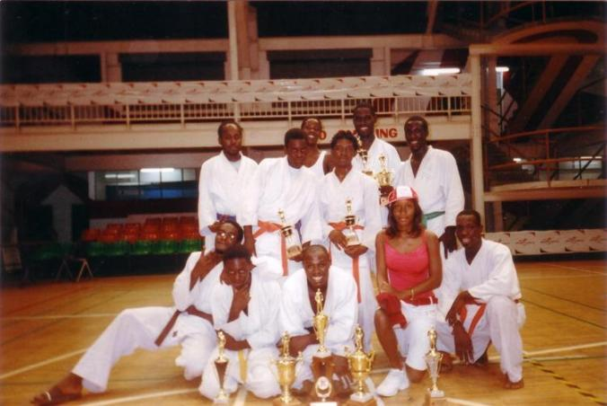

Judo
While attending high school in Trinidad, I was a victim of bullying and thus sorted to find ways to help better my defense. I also had a passion for watching martial arts movies. It so happened, that high school had a martial arts club, Malick Judo Club. I enrolled, grew a passion and love for this particular martial arts which by the way is also a sport and was able to also compete in national competitions.
Brief History
Judo was created, by Sensei Kano Jigoro in 1860. It first started in Japan and eventually spread all over the world. Judo embodies styles from Jiu-Jutsu minus the striking and is known as the gentle way. Judo’s philosophy is Maximum Efficiency, Minimum Effort.
